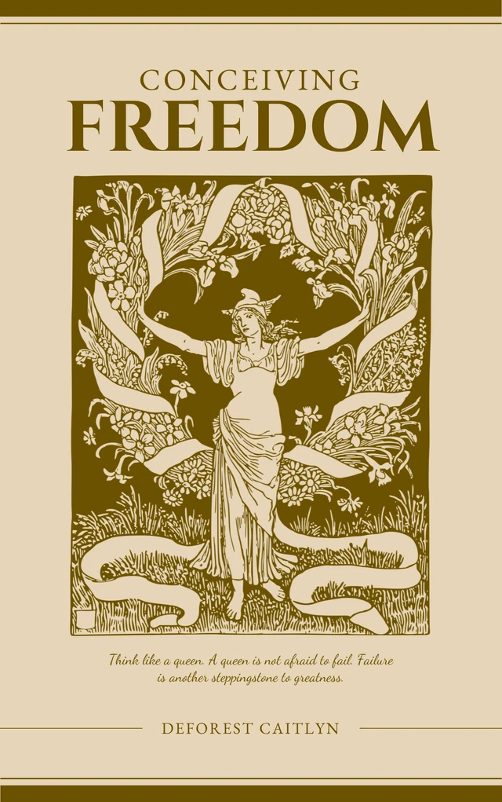

Soul
Author: Olivia Wilson
In 'Soul', Olivia Wilson crafts a poignant and uplifting tale of self-discovery. Protagonist Lily's journey is a relatable exploration of grief, love, and finding one's purpose. Wilson's lyrical prose and well-developed characters make for a compelling read that will resonate with fans of contemporary women's fiction.

Alone
Author: Morgan Maxwell
In 'Alone', Morgan Maxwell recounts her harrowing 30-day solo survival experience in the wilderness. This gripping memoir is a testament to human resilience, as Maxwell confronts her inner demons and battles the unforgiving environment. A riveting and inspiring true story of self-discovery and perseverance.

The Outer Space
Author: Kimberly Hopkins
'Conceiving Freedom' by Caitlyn Deforest offers a thought-provoking exploration of personal and collective freedom. The book delves into philosophical, social, and political dimensions, encouraging readers to reflect on what freedom truly means. Deforest's eloquent prose and insightful arguments make this a compelling and enlightening read for those interested in liberty and human rights.

Conceiving Freedom
Author: Deforest Caitlyn
Review: In 'The Outer Space', Kimberly Hopkins crafts a mesmerizing sci-fi debut. When astronaut Eva's mission goes awry, she finds herself hurtling through space and time. Hopkins' vivid descriptions and Eva's relatable struggles make this a gripping, thought-provoking exploration of humanity's place in the universe. A stellar read for fans of the genre

The Past Is Rising
Author: Kathryn Bywaters
Review: In 'The Past Rising', Kathryn Bywaters masterfully weaves historical fiction and mystery. When archaeologist Sophia uncovers a centuries-old secret, she must confront the darkness of her own past. Bywaters' lyrical prose, rich characters, and intricate plot twists make this a haunting and unforgettable tale of love, loss, and redemption.